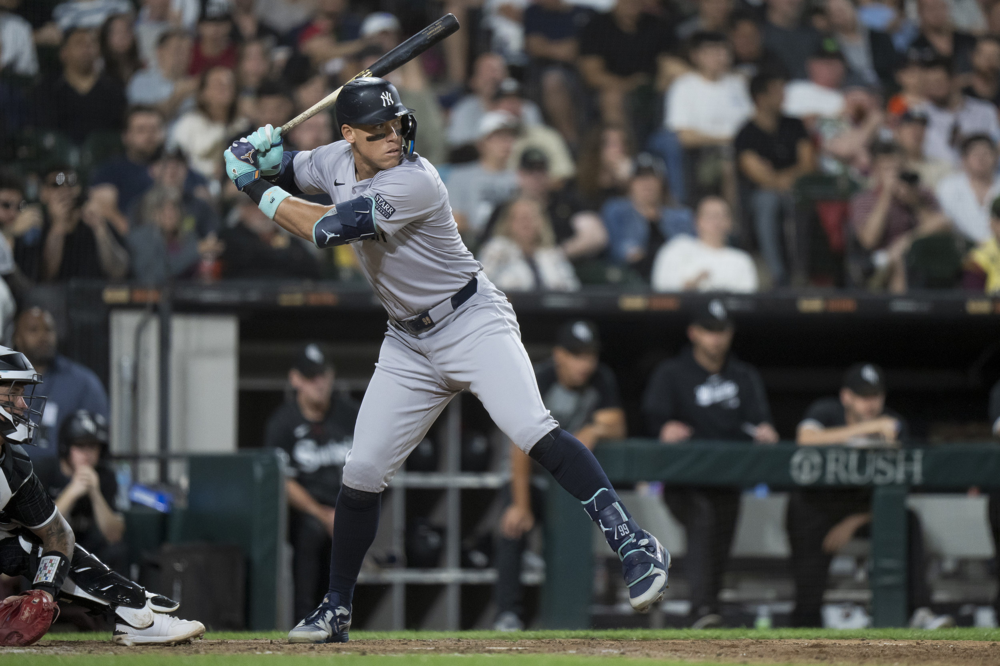

What is xBA?
Expected Batting Average (xBA) is a Statcast metric that measures the likelihood that a batted ball will become a hit. Each batted ball is assigned an xBA based on how often comparable balls in terms of exit velocity, launch angle and, on certain types of batted balls. For example, a line drive to the outfield with an xBA of .700 is given that figure because balls with a similar exit velocity and launch angle have become hits seven out of 10 times.
Why is xBA important?
Expected Batting Average is more indicative of a player's skill than regular batting average. xBA is indicative of exit velocity and launch angle for batted balls. A player who consistently hits the ball hard will usually get better results.
2024 NL(National League) xBA Leaders (As of 9/26/2024)
1. LAD DH Shohei Ohtani: .316 xBA
2. SDP 1B Luis Arraez: .314 xBA
3. SDP RF Fernando Tatis Jr.: .306 xBA
4. SDP CF Jackson Merrill: .302 xBA
5. ARI 2B Ketel Marte: .297 xBA
2024 AL(American League) xBA Leaders as of (9/26/2024)
1. TOR 1B Vladimir Guerrero Jr.: .324 xBA
2. KCR SS Bobby Witt Jr.: .323 xBA
3. NYY RF Juan Soto: .320 xBA
4. NYY CF Aaron Judge: .318 xBA
5. HOU DH/LF Yordan Alvarez: .308 xBA